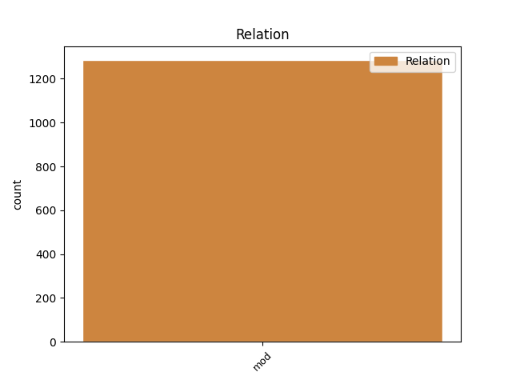
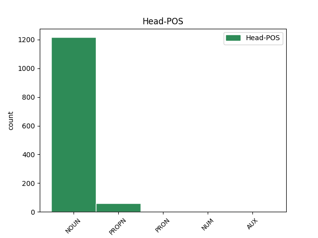
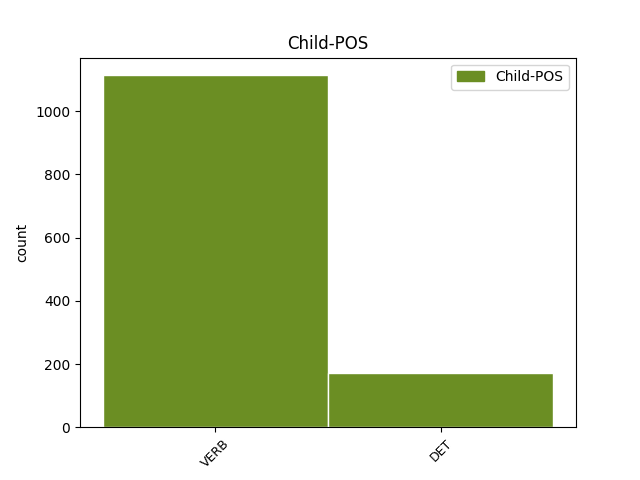

Distribution of features within this leaf



Agreement Rules sorted by frequency.
- When the dependent token is the modifer(mod) of the head token, and the head token is NOUN and the dependent token is VERB.
1 Olen _ _ _ _ 0 _ _ _
2 kuullut _ _ _ _ 0 _ _ _
3 työssä _ _ _ _ 0 _ _ _
4 käyvien käydä VERB V,Act,PcpVa,Pl,Gen Case=Gen|Number=Plur|PartForm=Pres|VerbForm=Part|Voice=Act 5 mod _ _
5 äitien äiti NOUN N,Pl,Gen Case=Gen|Number=Plur 0 _ _ _
6 joskus _ _ _ _ 0 _ _ _
7 lausahtavan _ _ _ _ 0 _ _ _
8 , _ _ _ _ 0 _ _ _
9 että _ _ _ _ 0 _ _ _
10 miksi _ _ _ _ 0 _ _ _
11 pitäisi _ _ _ _ 0 _ _ _
12 jäädä _ _ _ _ 0 _ _ _
13 kotiin _ _ _ _ 0 _ _ _
14 " _ _ _ _ 0 _ _ _
15 makailemaan _ _ _ _ 0 _ _ _
16 " _ _ _ _ 0 _ _ _
17 . _ _ _ _ 0 _ _ _
1 Ensin _ _ _ _ 0 _ _ _
2 tuodaan _ _ _ _ 0 _ _ _
3 keskelle _ _ _ _ 0 _ _ _
4 tämmöistä tämmöinen DET A,Dem,Sg,Par Case=Par|Number=Sing|PronType=Dem 5 mod _ Alt=DET
5 kaatosadetta kaatosade NOUN N,Sg,Par Case=Par|Number=Sing 0 _ _ _
6 ja _ _ _ _ 0 _ _ _
7 sitten _ _ _ _ 0 _ _ _
8 ei _ _ _ _ 0 _ _ _
9 tiedetä _ _ _ _ 0 _ _ _
10 edes _ _ _ _ 0 _ _ _
11 oikeaa _ _ _ _ 0 _ _ _
12 hotellia _ _ _ _ 0 _ _ _
13 ! _ _ _ _ 0 _ _ _
1 En _ _ _ _ 0 _ _ _
2 osaa _ _ _ _ 0 _ _ _
3 sanoa _ _ _ _ 0 _ _ _
4 , _ _ _ _ 0 _ _ _
5 oliko _ _ _ _ 0 _ _ _
6 torilla _ _ _ _ 0 _ _ _
7 paljonkin _ _ _ _ 0 _ _ _
8 venäläisiä _ _ _ _ 0 _ _ _
9 sotilaita _ _ _ _ 0 _ _ _
10 , _ _ _ _ 0 _ _ _
11 hullunmyllyn _ _ _ _ 0 _ _ _
12 keskuksessa _ _ _ _ 0 _ _ _
13 ollut olla VERB V,Act,PcpNut,Sg,Nom Case=Nom|Number=Sing|PartForm=Past|VerbForm=Part|Voice=Act 14 mod _ _
14 Valtonen valtonen PROPN N,Prop,Sg,Nom Case=Nom|Number=Sing 0 _ _ _
15 tunnustaa _ _ _ _ 0 _ _ _
16 . _ _ _ _ 0 _ _ _
1 Kunta-alan _ _ _ _ 0 _ _ _
2 henkilöstö _ _ _ _ 0 _ _ _
3 on _ _ _ _ 0 _ _ _
4 pienentynyt _ _ _ _ 0 _ _ _
5 kuluneen kulua VERB V,Act,PcpNut,Sg,Gen Case=Gen|Number=Sing|PartForm=Past|VerbForm=Part|Voice=Act 6 mod _ _
6 kolmen kolme NUM Num,Card,Sg,Gen Case=Gen|Number=Sing|NumType=Card 0 _ _ _
7 vuoden _ _ _ _ 0 _ _ _
8 aikana _ _ _ _ 0 _ _ _
9 . _ _ _ _ 0 _ _ _
1 Koko _ _ _ _ 0 _ _ _
2 urakka _ _ _ _ 0 _ _ _
3 kesti _ _ _ _ 0 _ _ _
4 semmoiset semmoinen DET A,Dem,Pl,Nom Case=Nom|Number=Plur|PronType=Dem 5 mod _ Alt=DET
5 kymmenen kymmenen NUM Num,Card,Sg,Nom Case=Nom|Number=Sing|NumType=Card 0 _ _ _
6 kuukautta _ _ _ _ 0 _ _ _
7 . _ _ _ _ 0 _ _ _
1 Kun _ _ _ _ 0 _ _ _
2 meillä _ _ _ _ 0 _ _ _
3 on _ _ _ _ 0 _ _ _
4 ollu _ _ _ _ 0 _ _ _
5 semmonen semmoinen DET A,Dem,Sg,Nom Case=Nom|Number=Sing|PronType=Dem|Style=Coll 6 mod _ Alt=DET
6 Arja arja PROPN N,Prop,Sg,Nom Case=Nom|Number=Sing 0 _ _ _
7 Jokine _ _ _ _ 0 _ _ _
8 joka _ _ _ _ 0 _ _ _
9 on _ _ _ _ 0 _ _ _
10 ollu _ _ _ _ 0 _ _ _
11 täällä _ _ _ _ 0 _ _ _
12 meillä _ _ _ _ 0 _ _ _
13 täs _ _ _ _ 0 _ _ _
14 , _ _ _ _ 0 _ _ _
15 tämmösessä _ _ _ _ 0 _ _ _
16 oikeakielisyydestä _ _ _ _ 0 _ _ _
17 puhumas _ _ _ _ 0 _ _ _
18 mä _ _ _ _ 0 _ _ _
19 en _ _ _ _ 0 _ _ _
20 tiä _ _ _ _ 0 _ _ _
21 tunnek _ _ _ _ 0 _ _ _
22 sä _ _ _ _ 0 _ _ _
23 semmost _ _ _ _ 0 _ _ _
24 tyttöö _ _ _ _ 0 _ _ _
25 . _ _ _ _ 0 _ _ _
Disagree Examples:
1 joka _ _ _ _ 0 _ _ _
2 jätkältä _ _ _ _ 0 _ _ _
3 irtois _ _ _ _ 0 _ _ _
4 sellanen sellainen DET A,Dem,Sg,Nom Case=Nom|Number=Sing|PronType=Dem|Style=Coll 5 mod _ Alt=DET
5 viiskymppiä viisikymppiä NOUN N,Sg,Par Case=Par|Number=Sing|Style=Coll 0 _ _ _
1 Thatcherilla _ _ _ _ 0 _ _ _
2 on _ _ _ _ 0 _ _ _
3 ollut _ _ _ _ 0 _ _ _
4 selviä _ _ _ _ 0 _ _ _
5 vaikeuksia vaikeus NOUN N,Pl,Par Case=Par|Number=Plur 0 _ _ _
6 sopeutua sopeutua VERB V,Act,InfA,Lat Case=Lat|InfForm=1|VerbForm=Inf|Voice=Act 5 mod _ _
7 uuteen _ _ _ _ 0 _ _ _
8 asemaansa _ _ _ _ 0 _ _ _
9 entisenä _ _ _ _ 0 _ _ _
10 suurmiehenä _ _ _ _ 0 _ _ _
1 Uusi _ _ _ _ 0 _ _ _
2 kahvila _ _ _ _ 0 _ _ _
3 on _ _ _ _ 0 _ _ _
4 Tampereen _ _ _ _ 0 _ _ _
5 eurooppalaisin _ _ _ _ 0 _ _ _
6 paikka paikka NOUN N,Sg,Nom Case=Nom|Number=Sing 0 _ _ _
7 pistäytyä pistäytyä VERB V,Act,InfA,Lat Case=Lat|InfForm=1|VerbForm=Inf|Voice=Act 6 mod _ _
8 kupposelle _ _ _ _ 0 _ _ _
9 , _ _ _ _ 0 _ _ _
10 pikkusyötävälle _ _ _ _ 0 _ _ _
11 tai _ _ _ _ 0 _ _ _
12 tuopposelle _ _ _ _ 0 _ _ _
13 . _ _ _ _ 0 _ _ _
1 Kirjailijalla _ _ _ _ 0 _ _ _
2 ja _ _ _ _ 0 _ _ _
3 ylläpitäjällä _ _ _ _ 0 _ _ _
4 on _ _ _ _ 0 _ _ _
5 koska _ _ _ _ 0 _ _ _
6 tahansa _ _ _ _ 0 _ _ _
7 mahdollisuus mahdollisuus NOUN N,Sg,Nom Case=Nom|Number=Sing 0 _ _ _
8 astua astua VERB V,Act,InfA,Lat Case=Lat|InfForm=1|VerbForm=Inf|Voice=Act 7 mod _ _
9 teokseensa _ _ _ _ 0 _ _ _
10 ja _ _ _ _ 0 _ _ _
11 hävittää _ _ _ _ 0 _ _ _
12 se _ _ _ _ 0 _ _ _
13 tai _ _ _ _ 0 _ _ _
14 vain _ _ _ _ 0 _ _ _
15 tehdä _ _ _ _ 0 _ _ _
16 muutoksia _ _ _ _ 0 _ _ _
17 , _ _ _ _ 0 _ _ _
18 korjauksia _ _ _ _ 0 _ _ _
19 , _ _ _ _ 0 _ _ _
20 lisäyksiä _ _ _ _ 0 _ _ _
21 ja _ _ _ _ 0 _ _ _
22 poistoja _ _ _ _ 0 _ _ _
23 . _ _ _ _ 0 _ _ _
1 Vakuutus _ _ _ _ 0 _ _ _
2 ei _ _ _ _ 0 _ _ _
3 korvaa _ _ _ _ 0 _ _ _
4 juopuneen juopua VERB V,Act,PcpNut,Sg,Gen Case=Gen|Number=Sing|PartForm=Past|VerbForm=Part|Voice=Act 5 mod _ _
5 tohelointeja tohelointi NOUN N,Pl,Par Case=Par|Number=Plur 0 _ _ _
6 . _ _ _ _ 0 _ _ _